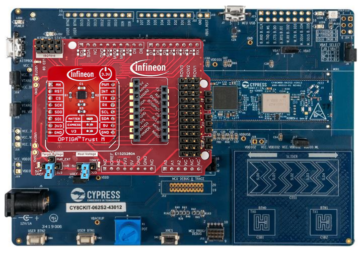
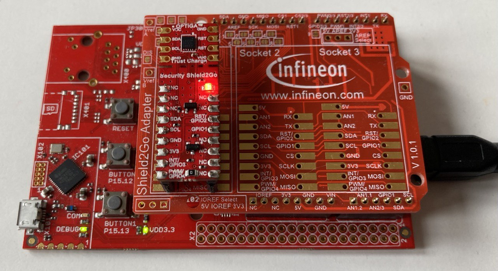

Overview on hardware variants
The following hardware is recommended for the evaluation of the respective communication interfaces.
Interface |
Host Hardware |
Adapter |
Sample |
|---|---|---|---|
I²C |
|||
UART |
|||
libusb |
PC, Raspberry Pi |
Any FTDI USB-HID/I²C converter board |
Any OPTIGA™ Trust M sample |
I²C
This variant the communication between host system and OPTIGA™ Trust M chip happens directly via I²C.
The preferred setup for this variant is a Raspberry Pi with a Pi 4 Click Shield for mikroBUS™ and an OPTIGA™ Trust M Shield.
{kind=link}
NOTE: If you use any of the embedded Linux as a host, please don’t forget to enable I²C support in your kernel (e.g. Raspberry Pi via raspi-config command), as well as add your user to the gpio group (e.g. Raspberry Pi via sudo adduser pi gpio).
NOTE: There are two PAL versions for I²C.
UART
In this variant, the communication between the host and the OPTIGA™ Trust M chip happens via an UART-to-I²C translator.
PSOC™ 62S2 Wi-Fi BT Pioneer Kit
The preferred setup for this variant is PSOC™ 62S2 Wi-Fi BT Pioneer Kit with OPTIGA™ Trust M Shield. In this setup, the PSOC™ 62S2 has to be set up as a UART-to-I²C translator by enabling the provisioning mode.
{kind=link}
XMC47000 Relax Kit
As a alternative setup for this variant, XMC47000 Relax Kit can be used with the My IoT Adapter. In this setup, the XMC4700 has to be set up as a UART-to-I²C translator by enabling the provisioning mode.
{kind=link}
libusb
In this variant, the communication between the host and the OPTIGA™ Trust M chip happens via a FTDI USB-HID/I²C converter board as USB-to-I²C translator.
This variant can be run directly from a normal host (Windows or Linux) and depends on the libusb library. It is tested with Raspberry Pi.